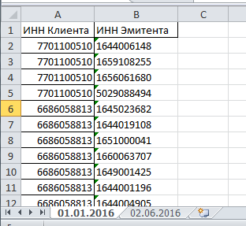

Отчёт строится:
По депозитам данные берутся из регистра "денежные средства по депозитным вкладам". Наименование объекта - наименование депозита, дата размещения - это дата документа "Ввод депозитного вклада" или "Размещение ДС на депозитом вкладе", Стоимость объекта - сумма ввода (размещения), процентная ставка - ставка из регистра "Условия депозитного вклада" на дату: для размещения ДС - срез последних на дату размещения + 1 день, для ввода - срез последних на дату ввода.
По ценным бумагам данные берутся из регситра "Бух. партии ценных бумаг". Наименование объекта - наименование бумаги, дата приобретения - дата поступления, Стоимость объекта - стоимость покупки, Цена приобретения - Стоимость покупки / Количество прихода.
Данные по аффилированным лицам подгружаются из Эксель файла.
Структура Эксель файла: имя страницы - это дата актуальности данных в формате "01.01.2016". Колонки таблицы: 1. ИНН клиента, 2. ИНН эмитента. Чтение файла осуществляется со второй строки (первая - шапка). Если ИНН клиента отсутствует на странице с ближайшей датой (меньшей или равной дате окончания отчёта), система считает, что данные не изменились и берёт их с предыдущей страницы. Историчность поддерживается благодаря страницам с датами.
